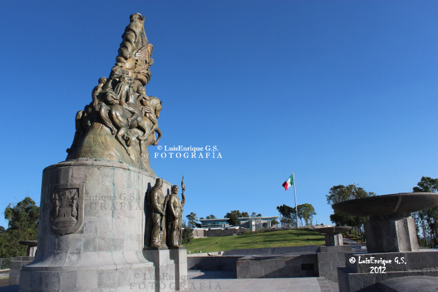
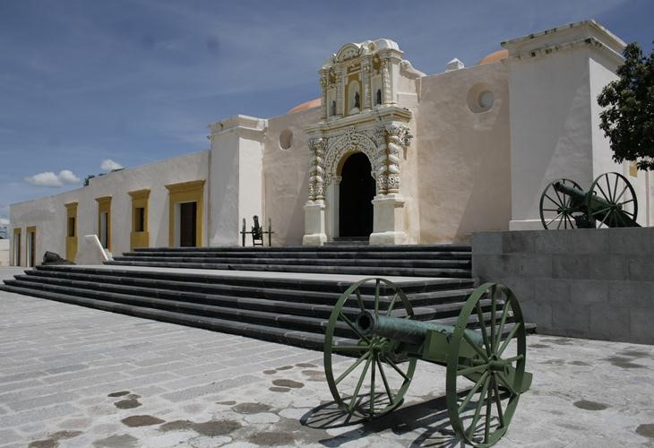

Monumentos de la batalla del 5 de mayo
Monumento a la victoria
El Monumento a la Victoria (5 de mayo) fue hecha por el escultor y pintor mexicano Ernesto Tamariz. Recibe su nombre debido a que aquí el ejercito mexicano libró una poderosa batalla contra el ejercito francés, durante la Segunda Intervención Francesa el 5 de mayo de 1862. Dicha batalla fue liderada por el General Ignacio Zaragoza, que estaba a cargo del Ejercito de Oriente. La batalla fue ganada por el ejercito mexicano, lo que llenó de orgullo al país, y sobre todo a la gente de Puebla.

Fuertes de Loreto y Guadalupe
Los fuertes de Loreto y Guadalupe son unas antiguas edificaciones militares que se encuentran en la ciudad de Puebla. Originalmente se trataba de capillas construidas en lo alto de un cerro Acueyametepec, que fueron reconstituidas a principios del siglo XIX como fortificaciones con finalidades militares. Sirvieron como escenario principal tanto en la batalla como en el sitio de Puebla, durante la Segunda Intervención Francesa en México. Declarados como patrimonio histórico de México, actualmente albergan museos de sitio.

Aplicacion Seis, JCM


 1
1 2
2 3
3 4
4 5
5 6
6